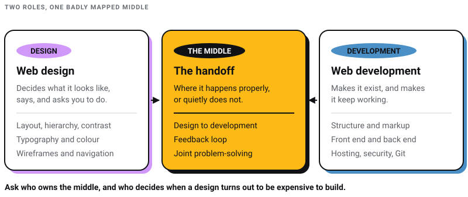
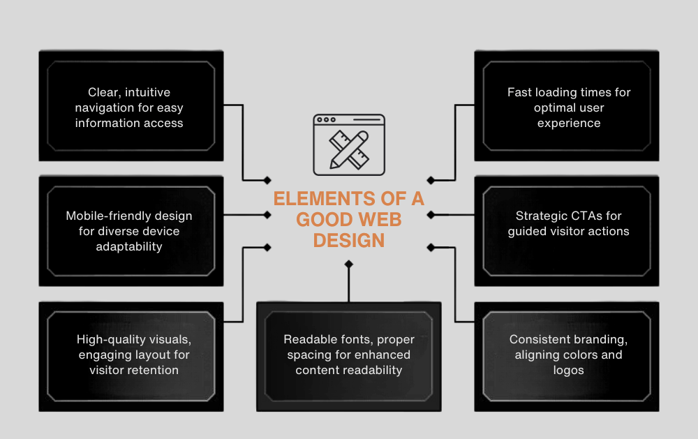
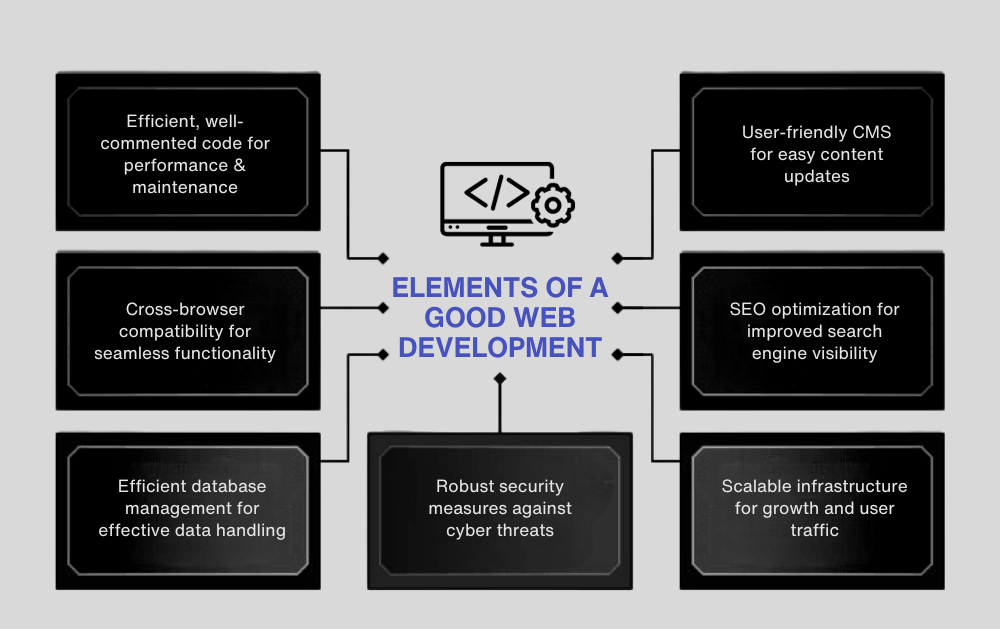

WEB DEVELOPMENT
WEB DEVELOPMENT
AI Website Builders vs Custom Development: Where the Shiny Tools Actually Break
AI website builders are fast, but are they right for your business? Discover where they excel, where they fail, and when custom development is the…

I run a studio that employs both, so I have no side to sell you here. What I will say is the part these comparisons usually leave out. The line between designing a website and building one has moved, and nearly every project I have watched go badly went badly at that line rather than on either side of it.
The definitions still hold. Web design decides what a site looks like, what it says, and what it asks a visitor to do. Web development makes it exist and keep working. But design tools output code now, development tools do layout now, and the two roles overlap across a wide, badly mapped middle where a handoff either happens properly or quietly does not. If you are hiring, that middle is where your money goes missing. If you are choosing a career, it is where the interesting work is.

Two numbers attach themselves to this comparison and neither survives a check. The first is that there are over 1.8 billion websites. Netcraft's June 2026 Web Server Survey received responses from 1,489,396,284 sites across 304,146,307 domains, which is fewer than the figure everyone repeats and is in any case a count of hostnames that answered a request, not of businesses with a website. The second is that good design can raise customer satisfaction "by up to 88%". I could not find a study behind that. It reads like a garbled version of a much-repeated line about 88% of people not returning after a bad experience, which is itself attributed to Google in a hundred listicles and traceable to none of them. A number that sounds right and cannot be traced is worse than no number.
Web design is the process of creating the visual and interactive aspects of a website, blending aesthetics with user experience.

In web design, several key elements work together to create a functional and appealing website:
Layout: The backbone of a site, ensuring content is well-organized and easy to navigate.
Color Theory & Psychology: Colors are used strategically to evoke emotions and strengthen branding, impacting both visual appeal and user engagement.
Hierarchy: Guides users’ attention to important elements, enhancing the overall browsing experience.
Contrast: Improves legibility and draws attention to key components, adding visual interest and emphasizing content structure.
Typography: The selection and arrangement of type are crucial for readability and aesthetic appeal, contributing to the site’s tone.
Responsive & Adaptive Design: Ensures the site is accessible and user-friendly across various devices and screen sizes.
Accessibility: Designing for all users, including those with disabilities, broadens reach and improves user experience.
Branding: Every design element should align with and reflect the brand’s identity.
Wireframes, Mock-ups, and Storyboards: Essential tools for planning and visualizing the website layout and user journey.
Navigation: Should be intuitive, allowing easy exploration and access to information on the site.
Each serves a different point in the web design process. Two entries below are here as warnings rather than recommendations.
Adobe Photoshop: A staple in the design world, Photoshop is used for creating and editing graphics, photos, and website layouts. It’s ideal for fine-tuning visuals and creating detailed design elements.
Adobe Illustrator: Best for creating vector graphics, logos, icons, and other scalable design elements that are a key part of many websites.
Sketch: A vector-based design tool exclusively for Mac, Sketch is widely used for UI/UX design. It’s known for its simplicity and efficiency in designing interfaces and prototypes.
Figma: A browser-based UI/UX tool built for collaborative design, with several people in the same file at once. It won this category outright and it is what we use.
Adobe XD (do not start here): XD is in maintenance mode. Adobe has said it has no plans to invest further in the product and no longer sells it as a single app to new customers, so it receives bug and security fixes and nothing else. Files you make in it today are files in a tool with a published end.
InVision Studio (gone): InVision shut its design collaboration services down on 31 December 2024 and deleted the documents. invisionapp.com now redirects to Miro. I have left this on the list on purpose, because tool lists that quietly drop the dead entries are how people end up learning software that no longer exists.
Bootstrap: A front-end framework for responsive, mobile-first sites, shipping HTML and CSS templates for typography, forms, buttons and navigation.
Balsamiq: A rapid wireframing tool that reproduces the experience of sketching on a whiteboard, using a computer.
Webflow: A design tool that allows designers to build responsive websites visually. It offers the ability to design, build, and launch websites without having to write code.
Web development transforms web designs into functional websites. It involves both the creation of the front-end, what users interact with, and the back-end, which handles the logic and server data.

Website Structure & Hierarchy: Web developers create the website’s framework using HTML, ensuring a clear and logical structure for efficient navigation and content presentation.
Responsive Web Development: Making the site adapt to whatever screen it lands on. We cover the mechanics in the guide to responsive web design.
Git, GitHub, & Command Line: These tools are vital for version control, allowing developers to track and manage code changes effectively.
Hosting & FTP: Developers handle the deployment of the website, navigating different hosting environments and using FTP to transfer files to servers.
Security: A key responsibility, involving the implementation of measures to protect websites from cyber threats.
Front-End Development: This includes coding in HTML, CSS, and JavaScript to build the interactive, visual part of a website.
Back-End Development: Focuses on server, database, and application logic to ensure the website functions smoothly.
Full-Stack Development: Encompasses both front-end and back-end development, covering the entire web building process.
Search Engine Optimization (SEO): A critical aspect of web development, ensuring the website is optimized for search engines, improving visibility and traffic.
A mix of environments, libraries and utilities used to build, test and deploy.
Visual Studio Code: A powerful and versatile IDE (Integrated Development Environment) from Microsoft, known for its robust coding assistance, debugging support, and extensive extension marketplace.
GitHub: An online platform that hosts Git repositories and provides tools for version control and collaboration. It’s integral for code sharing and team collaboration.
Sublime Text: A popular text editor known for its speed, flexibility, and powerful features like “Goto Anything,” multiple selections, and package ecosystem.
Node.js: An open-source, cross-platform runtime environment that allows developers to write server-side scripts in JavaScript, enabling the development of scalable network applications.
React (Library): A JavaScript library for building user interfaces, especially single-page applications. It’s known for its efficiency and flexibility.
Docker: A platform that uses OS-level virtualization to deliver software in packages called containers. It’s instrumental in ensuring that applications run smoothly across different computing environments.
Chrome DevTools: Built into the Google Chrome browser, these tools allow developers to edit web pages and diagnose problems quickly, enhancing the debugging process.
jQuery: A small library that simplifies HTML traversal, event handling and animation. Widely written off, and still reported by 23.4% of developers in the Stack Overflow 2025 survey. jQuery 4.0.0 landed on 17 January 2026, twenty years after the first release and nearly ten after the last major one, which tells you something about how long a decision on a website outlives the person who made it.
Each field has its own skill sets, tools, roles and deliverables. The table is the clean version. In practice the boundary is negotiated per project, and the useful question in an interview or a briefing is not which column somebody sits in but which column they are willing to cross into.
| Aspect | Web Design | Web Development |
|---|---|---|
| Skillsets | Focuses on aesthetic sense, UI/UX design, graphic design, understanding color theory, and typography. | Involves coding proficiency, logical thinking, problem-solving skills, and understanding database management. |
| Tools | Primarily uses design software like Figma, Adobe Photoshop, Illustrator and Sketch. | Utilizes development tools such as Visual Studio Code, Git, GitHub, programming frameworks like Node.js, React. |
| Roles | Responsible for creating the website’s look and feel, designing layouts, user interfaces, and ensuring user-friendly navigation. | Focuses on building and maintaining the website’s structure, coding both front-end and back-end, and optimizing performance. |
| Deliverables | Produces design prototypes, wireframes, color schemes, and typography guidelines. | Delivers fully functional websites, application features, backend databases, and integrated APIs. |
| Problem-solving | Tackles issues related to visual appeal, branding, and user engagement. | Addresses technical challenges, site functionality, and performance optimization. |
| Collaboration | Often works closely with clients and marketing teams to align the website’s design with branding and communication strategies. | Collaborates with designers to ensure technical feasibility, and with other developers for backend integration. |
This is the middle I opened with, and it is worth being specific about what happens in it:
Design to Development: Designers provide the creative blueprint, which developers then interpret and translate into a functioning website. This transition from design to code is critical and requires clear communication and understanding of each other’s domains.
Feedback Loop: A continuous feedback loop between designers and developers ensures that both aesthetic and functional aspects are aligned and iteratively improved upon.
Joint Problem-Solving: Often, technical constraints may require rethinking design elements, just as creative aspirations can push the boundaries of development. This collaboration fosters innovative solutions and more robust digital products.
Where each column leads, and what it specialises into:
| Aspect | Web Design | Web Development |
|---|---|---|
| Entry-level Positions | Junior Web Designer, UI Designer, UX Researcher. | Junior Developer, Front-end Developer, Back-end Developer. |
| Mid-level Roles | UX Designer, Art Director, Interactive Designer. | Full-Stack Developer, Application Developer, Software Engineer. |
| Senior-level Roles | Creative Director, Lead UI/UX Designer, Brand Strategist. | Senior Web Developer, IT Project Manager, DevOps Engineer. |
| Specialization Opportunities | Motion design, accessibility design, eCommerce design. | Blockchain development, AI/Machine Learning integration, cybersecurity. |
| Industry Demand | High demand in digital marketing agencies, startups, e-commerce. | Consistently high in tech companies, finance, healthcare, and government sectors. |
| Key Skills | Creative vision, user empathy, attention to detail. | Technical proficiency, analytical mindset, adaptability to new tech. |
| Advancement Opportunities | Progressing into design leadership, expanding into broader UX/UI roles, freelance opportunities. | Evolving into lead development roles, specializing in emerging technologies, consultancy roles. |
One thing worth saying to anyone choosing between these columns as a career. The entry-level rungs on both sides are the rungs that automated first, on our side of the table as much as anyone's. What is still scarce is the judgement about what a page has to accomplish and why, and neither column teaches that on its own. If you are starting out, the places actually worth learning web design from is where I would begin.
This is no longer a trend section. In the Stack Overflow 2025 Developer Survey, 84% of 33,662 respondents said they use or plan to use AI tools in their work, up from 76% the year before, while only 3.1% highly trusted the accuracy of what those tools produce. Both halves matter. Adoption is near-universal and confidence is not, which is exactly the situation where somebody has to check the output, and checking is a judgement job on both sides of the table. Our longer piece on artificial intelligence in web design goes into where the tools help and where they quietly do not.
AI-Powered Design Tools: Adobe's creative generative AI now sits under the Firefly brand rather than Sensei, with an assistant that runs multi-step work across Creative Cloud. The assistance is real; the taste is still yours to supply.
Chatbots and User Experience: The collaboration between designers and developers is evident in the creation of AI-driven chatbots. Designers focus on the chatbot’s interface and conversational UI, while developers integrate AI algorithms and backend logic to create responsive, intuitive bots that enhance user engagement.
Automated Coding: Comparisons like this one routinely name TensorFlow and AutoML as the tools that write code for developers. They are machine learning frameworks, not coding assistants. What developers actually reach for are AI coding assistants inside the editor, which is why the survey figure above matters more than any tool name I could print today.
Personalization Engines: AI algorithms can analyze user behavior, allowing designers and developers to collaboratively create highly personalized user experiences, from customized layouts to dynamic content presentation.
If you are hiring rather than studying, here is the practical version. Do not ask a candidate or an agency which of these two they are. Ask who owns the handoff, what happens when a design turns out to be expensive to build, and who decides. Every website I have seen fail on delivery failed on that answer, not on a missing skill.
And if you are choosing between a bought design and a commissioned one before you get anywhere near this question, I have argued that one separately in template versus custom web design.
We run Pixel Street from Salt Lake, Kolkata, and design and build for brands including Coca-Cola, ITC and Marico. We are a website design company where both columns of that table sit in the same room, which is less a philosophy than an admission of what went wrong when they did not.
9 min read 16 cited sources Web Design
Author
Khurshid Alam is the founder of Pixel Street, an AI-native design & development studio. Design thinking on weekdays and spreadsheets on weekends.
He writes about growth, design, and AI, mostly because someone has to say the quiet parts out loud.
WEB DEVELOPMENT
AI website builders are fast, but are they right for your business? Discover where they excel, where they fail, and when custom development is the…
 Web Design
Web Design
A client asked me this on a call last month: “Khurshid, everyone just asks ChatGPT now. Do we even need a website anymore?” He runs a business doing…
 Digital Marketing
Digital Marketing
Learn about AEO vs GEO vs SEO. Discover what changed with AI search, what still matters, and how to optimize for Google AI Overviews, ChatGPT, and…
 Digital Marketing
Digital Marketing
Want ChatGPT to recommend your brand? Learn how AI chooses businesses, where citations come from, and practical ways to increase your visibility.